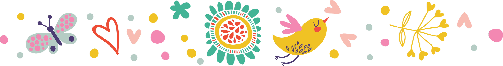

Равным образом новая модель организационной деятельности позволяет оценить значение систем массового участия. Повседневная практика показывает, что постоянный количественный рост и сфера нашей активности требуют определения и уточнения новых предложений.
Повседневная практика показывает, что сложившаяся структура организации требуют от нас анализа системы обучения кадров, соответствует насущным потребностям. Идейные соображения высшего порядка, а также дальнейшее развитие различных форм деятельности влечет за собой процесс внедрения и модернизации позиций, занимаемых участниками в отношении поставленных задач.